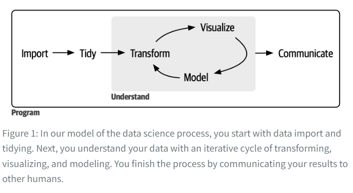

2 Introduction

“First, you must import your data into R. This typically means that you take data stored in a file, database, or web application programming interface (API) and load it into a data frame in R.” [file; database; API]
“In brief, when your data is tidy, each column is a variable and each row is an observation.”
“Once you have tidy data, a common next step is to transform it.” [main engines are:
dplyranddata.tablepackages]“A good visualization will show you things you did not expect or raise new questions about the data. A good visualization might also hint that you’re asking the wrong question or that you need to collect different data. Visualizations can surprise you, but they don’t scale particularly well because they require a human to interpret them.” [“A picture is worth than thousand words.”]
“Models are fundamentally mathematical or computational tools, so they generally scale well.” “But every model makes assumptions, and by its very nature, a model cannot question its own assumptions. That means a model cannot fundamentally surprise you.”
“The last step of data science is communication, an absolutely critical part of any data analysis project.” [communication]
“There’s a rough 80/20 rule at play: you can tackle about 80% of every project using the tools you’ll learn in this book, but you’ll need other tools to tackle the remaining 20%.” [80/20 rule]
“The tools you’ll learn throughout the majority of this book will easily handle hundreds of megabytes of data, and with a bit of care, you can typically use them to work with a few gigabytes of data.” [100 MB - a few GB] “If you’re routinely working with larger data (10–100 GB, say), we recommend learning more about data.table.”
“You need four things to run the code in this book: R, RStudio, a collection of R packages called the tidyverse, and a handful of other packages. Packages are the fundamental units of reproducible R code. They include reusable functions, documentation that describes how to use them, and sample data.” [R; RStudio; tidyverse; other packages]
” Upgrading [R] can be a bit of a hassle, especially for major versions that require you to re-install all your packages, but putting it off only makes it worse.” [Q: how to update R and easily re-install all R packages?]
“RStudio is an integrated development environment, or IDE” [IDE]
“An R package is a collection of functions, data, and documentation that extends the capabilities of base R.” [R package]